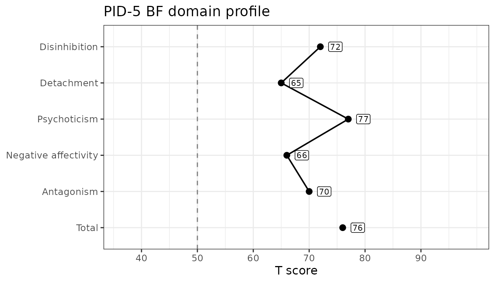

The PID-5-BF (Brief Form) is a 25-item version of the PID-5 that yields the 5 personality-trait domain scores and an overall total score (it does not produce the 25 facet scores). We can demonstrate the package’s functionality using some simulated data.
Score simulated PID-5-BF data
The sim_pid5bf dataset is built into the package and
contains 100 rows (each a simulated participant) across 25 columns named
pid_1 to pid_25. To compute the 5 domain
scores and the total, we use score_pid5() with
version = "BF". As with the other forms, we can specify the
items by column number (items = 1:25) and set
append = FALSE to see just the scores. The only validity
scale calculable from this subset of items is the percentage of missing
items (PNA), which validity_pid5() returns.
The pid_total column is the mean of all 25 items,
following Markon et al. (2024, p. 23). Note that this is not
the same as averaging the 5 domain scores whenever any items are
missing: each scale applies the missing rule to its own
items, so the total tolerates up to 6 unanswered items while a 5-item
domain tolerates only 1. See ?score_pid5 for the
details.
data("sim_pid5bf")
score_pid5(sim_pid5bf, items = 1:25, version = "BF", append = FALSE)
#> # A tibble: 100 × 6
#> pid_disinhibition pid_detachment pid_psychoticism pid_negativeAffectivity
#> <dbl> <dbl> <dbl> <dbl>
#> 1 1.8 1.6 2 1.8
#> 2 2.2 2.2 2.2 1.4
#> 3 2.4 1.2 1.8 1.6
#> 4 2.4 2.2 0.8 0.8
#> 5 2.2 1.2 1.4 2.8
#> 6 1.8 0.6 2.2 1.2
#> 7 1 2 1.6 1.4
#> 8 1.4 1.8 1.2 1.8
#> 9 1.6 0.8 2.2 0.8
#> 10 1.2 1.8 1.4 0.6
#> # ℹ 90 more rows
#> # ℹ 2 more variables: pid_antagonism <dbl>, pid_total <dbl>
validity_pid5(sim_pid5bf, items = 1:25, version = "BF", append = FALSE)
#> # A tibble: 100 × 1
#> pid_PNA
#> <dbl>
#> 1 0
#> 2 0
#> 3 0
#> 4 0
#> 5 0
#> 6 0
#> 7 0
#> 8 0
#> 9 0
#> 10 0
#> # ℹ 90 more rowsScale Reliability
As we compute scale scores, we can also estimate their inter-item reliability using Cronbach’s α (alpha) or McDonald’s ω (omega total). α is fast and widely used, but it assumes tau-equivalence (all items load equally on a single factor); violations can make α under- or over-estimate reliability. ω is based on a congeneric single-factor model, allowing items to have different loadings and error variances; it typically provides a more accurate reliability estimate for unit-weighted sums. Both assume the scale is essentially unidimensional; α and ω coincide when tau-equivalence holds.
We estimate reliability with the reliability_pid5()
function, which returns a tibble with one row per scale and columns for
the number of items and the requested coefficients. By default it
computes both alpha and omega; for the latter,
we will need the lavaan package installed (set
omega = FALSE to skip it). Note that, because this is
naively simulated data, we would expect the reliability in this example
to be poor.
reliability_pid5(
data = sim_pid5bf,
items = 1:25,
version = "BF"
)
#> # A tibble: 6 × 4
#> scale nItems alpha omega
#> <chr> <int> <dbl> <dbl>
#> 1 Disinhibition 5 -0.260 0.00111
#> 2 Detachment 5 0.238 0.365
#> 3 Psychoticism 5 0.0658 0.0863
#> 4 Negative Affectivity 5 -0.0852 0.000422
#> 5 Antagonism 5 -0.0967 0.105
#> 6 Total 25 -0.0719 0.0575Normative Scores
The pid_norms dataset carries the normative score
distributions published by Markon et al. (2024), including a set built
on the brief form. The norm_pid5() function looks scored
columns up in those tables and returns, for each one, the T score and
percentile printed against the nearest tabled raw score. It converts
scores rather than computing them, so we hand it the output of
score_pid5().
The brief-form tables cover the five domain scales and the total
score — every scale score_pid5(version = "BF") returns — so
each column here gains both a _t and a _ptl
column.
scored <- score_pid5(sim_pid5bf, items = 1:25, version = "BF")
norm_pid5(
scored,
scores = paste0(
"pid_",
c("negativeAffectivity", "detachment", "antagonism", "disinhibition",
"psychoticism", "total")
),
version = "BF",
append = FALSE
)
#> # A tibble: 100 × 12
#> pid_negativeAffectivity_t pid_negativeAffectivity_ptl pid_detachment_t
#> <int> <dbl> <int>
#> 1 66 0.9 65
#> 2 60 0.81 74
#> 3 63 0.86 58
#> 4 51 0.56 74
#> 5 81 0.99 58
#> 6 57 0.74 49
#> 7 60 0.81 71
#> 8 66 0.9 68
#> 9 51 0.56 52
#> 10 48 0.47 68
#> # ℹ 90 more rows
#> # ℹ 9 more variables: pid_detachment_ptl <dbl>, pid_antagonism_t <int>,
#> # pid_antagonism_ptl <dbl>, pid_disinhibition_t <int>,
#> # pid_disinhibition_ptl <dbl>, pid_psychoticism_t <int>,
#> # pid_psychoticism_ptl <dbl>, pid_total_t <int>, pid_total_ptl <dbl>Every number returned is a cell of a published table: the nearest
printed row is selected and nothing is interpolated. A score that falls
outside a printed range is capped to the nearest end rather than
extrapolated, and a warning reports how many observations that happened
to. Every report this function makes is a warning, so a single
suppressWarnings() call silences it. Note that
version = "BF" selects the brief-form tables — the same raw
score converts differently across forms.
If the items were answered on a four-option response scale that
starts somewhere other than 0 — 1 to 4, say — pass that range as
srange and each score is reconciled to the published 0–3
metric before it is looked up, with a warning naming which scales were
adjusted and which were left alone. The per-scale formulas are given in
?norm_pid5.
Profile Plots
Once a respondent’s scores are normed, plot_pid5() draws
them as a profile against the published metric. It takes one respondent
— a profile plot shows one person — so we norm the whole dataset and
hand it a single row. Passing version = "BF" builds the
plot against the brief form’s own tables.
bf_scales <- paste0("pid_", pid_scales[["BF"]]$camelCase)
normed <- norm_pid5(scored, scores = bf_scales, version = "BF")
plot_pid5(normed[1, ], version = "BF")
All six brief-form scales get a point, but the profile line stops
before total: the total is an overall elevation across the
five domains rather than a sixth domain, so joining it to the line would
imply a comparability it does not have. The point itself is still drawn,
so the elevation is readable alongside the domains it summarizes.
The dashed line marks T = 50, the normative sample’s mean, and the score axis spans the range the published brief-form tables actually print for these scales — so the axis does not rescale from respondent to respondent and two brief-form profiles are directly comparable. Nothing on the plot says whether a score is high, low, or concerning: {hitop} presents scores against norms and leaves the interpreting to you.
There is no facet profile for this form. The brief form’s 25 items
yield the five domains and the total and no facet scores at all, so
level = "facet" is an error here rather than an empty plot;
facet profiles are available for the full and short forms. Set
metric = "percentile" for a percentile axis instead of T
scores; the full-form vignette shows one. The result is an ordinary
ggplot object, so you can restyle it with any ggplot2 layer.